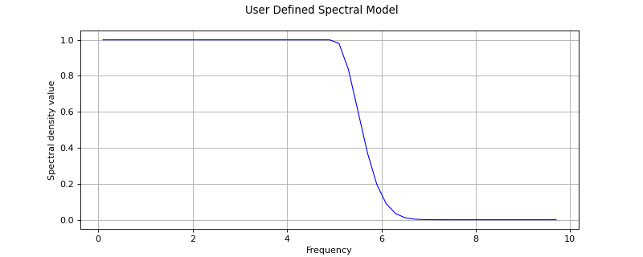

UserDefinedSpectralModel¶
(Source code, png)
{kind=link}

- class UserDefinedSpectralModel(*args)¶
Spectral model defined by the User.
- Parameters:
- frequency
RegularGrid The frequency grid
 with step
with step  on which the model is built.
on which the model is built.- densityCollectionFunction
HermitianMatrixCollection Collection of hermitian matrices
 which are the images of each point of the frequency grid through the density spectral function.
which are the images of each point of the frequency grid through the density spectral function.
- frequency
Notes
We consider a multivariate process
 of dimension
of dimension  where
where  . We only treat here the case where the domain is of dimension 1:
. We only treat here the case where the domain is of dimension 1:  (
( ).
).We denote
 the time stamps of the time grid.
the time stamps of the time grid. is supposed to be a stationary second order process and we suppose that its spectral density function
is supposed to be a stationary second order process and we suppose that its spectral density function  defined by:
defined by:(1)¶
![\forall \vect{f} \in \Rset^n, \,S(\vect{f}) = \int_{\Rset^n}\exp\left\{ -2i\pi <\vect{f},\vect{\tau}> \right\} C^{stat}(\vect{\tau})\di{\vect{\tau}}]()
exists, where
![\mathcal{H}^+(d) \in \mathcal{M}_d(\Cset)]() is the set of d-dimensional positive definite hermitian matrices.
is the set of d-dimensional positive definite hermitian matrices.We get a piecewise constant function on
![[-f_c,f_c]]() , where the intervals on which the density spectral function is constant are centered on the points of the frequency grid, of length .
, where the intervals on which the density spectral function is constant are centered on the points of the frequency grid, of length .Then, it is possible to evaluate the spectral density function for a given frequency thanks to the method computeSpectralDensity: if the frequency is not inside the interval
, OpenTURNS returns an exception. Otherwise, it returns the hermitian matrix of the subinterval of that contains the given frequency.Examples
Create the frequency grid:
>>> import openturns as ot >>> from math import exp >>> fmin = 0.1 >>> df = 0.5 >>> N = int((10.0 - fmin)/ df) >>> myFrequencyGrid = ot.RegularGrid(fmin, df, N)
Define the spectral function:
>>> def s(f): ... if(f <= 5.0): ... return 1.0 ... else: ... x = f - 5.0 ... return exp(-2.0 * x * x)
Create the collection of HermitianMatrix:
>>> myCollection = ot.HermitianMatrixCollection() >>> for k in range(N): ... frequency = myFrequencyGrid.getValue(k) ... matrix = ot.HermitianMatrix(1) ... matrix[0, 0] = s(frequency) ... myCollection.add(matrix)
Create the spectral model:
>>> mySpectralModel = ot.UserDefinedSpectralModel(myFrequencyGrid, myCollection)
Methods
__call__(frequency)Evaluate the spectral density function for a specific frequency.
computeStandardRepresentative(frequency)Compute the standard representant of the spectral density function.
draw(*args)Draw a specific component of the spectral density function.
Get the amplitude parameter of the spectral density function.
Accessor to the object's name.
Return the frequency grid associated to the model.
getId()Accessor to the object's id.
Get the input dimension of the spectral density function.
getName()Accessor to the object's name.
Get the spatial correlation matrix of the spectral density function.
Get the dimension of the SpectralModel.
getScale()Get the scale parameter of the spectral density function.
Accessor to the object's shadowed id.
Accessor to the object's visibility state.
hasName()Test if the object is named.
Test if the object has a distinguishable name.
setAmplitude(amplitude)Set the amplitude parameter of the spectral density function.
setFrequencyGrid(frequencyGrid)Set the frequency grid associated to the model.
setName(name)Accessor to the object's name.
setScale(scale)Set the scale parameter of the spectral density function.
setShadowedId(id)Accessor to the object's shadowed id.
setVisibility(visible)Accessor to the object's visibility state.
- __init__(*args)¶
- computeStandardRepresentative(frequency)¶
Compute the standard representant of the spectral density function.
- Parameters:
- taufloat
Frequency value.
- Returns:
- rhoComplex
Standard representant factor of the spectral density function.
Notes
According to definitions in
CovarianceModel, as the spectral density function is the Fourier transform of the stationary covariance function and using the expression of the last one, the spectral density function writes as a matrix-complex product where the matrix is the constant spatial covariance structure and the complex represents the standard representative:Thus,
![\forall \vect{f} \in \Rset^n, \cS(\vect{f}) = \prod_{k=1}^{n} \vect{\theta}_k \mat{\Sigma} \rho(\vect{f} \odot \vect{\theta})]()
where
 is a covariance matrix that explains the covariance structure and
is a covariance matrix that explains the covariance structure and

- draw(*args)¶
Draw a specific component of the spectral density function.
- Parameters:
- rowIndexint,
![0 \leq rowIndex < dimension]()
The row index of the component to draw. Default value is 0.
- columnIndex: int, :math:`0 leq columnIndex < dimension`
The column index of the component to draw. Default value is 0.
- minimumFrequencyfloat
The lower bound of the frequency range over which the model is plotted. Default value is SpectralModel-DefaultMinimumFrequency in
ResourceMap.- maximumFrequencyfloat
The upper bound of the frequency range over which the model is plotted. Default value is SpectralModel-DefaultMaximumFrequency in
ResourceMap.- frequencyNumberint,
![pointNumber \geq 2]()
The discretization of the frequency range
![[minimumFrequency, maximumFrequency]]() over which the model is plotted. Default value is SpectralModel-DefaultFrequencyNumber in class:~openturns.ResourceMap.
over which the model is plotted. Default value is SpectralModel-DefaultFrequencyNumber in class:~openturns.ResourceMap.- modulebool
Flag to tell if module has to be drawn (True) or if it is the argument to be drawn (False). Default value is True.
- rowIndexint,
- Returns:
- graphGraph
Graphic of the specified component
- getAmplitude()¶
Get the amplitude parameter of the spectral density function.
- Returns:
- amplitude
Point The used amplitude parameter.
- amplitude
- getClassName()¶
Accessor to the object’s name.
- Returns:
- class_namestr
The object class name (object.__class__.__name__).
- getFrequencyGrid()¶
Return the frequency grid associated to the model.
- Returns:
- grid
RegularGrid The frequency grid of the model.
- grid
- getId()¶
Accessor to the object’s id.
- Returns:
- idint
Internal unique identifier.
- getInputDimension()¶
Get the input dimension of the spectral density function.
- Returns:
- inputDimensionint
SpatialDimension of the SpectralModel.
- getName()¶
Accessor to the object’s name.
- Returns:
- namestr
The name of the object.
- getOutputCorrelation()¶
Get the spatial correlation matrix of the spectral density function.
- Returns:
- spatialCorrelation
CorrelationMatrix Correlation matrix
![\mat{R} \in \mathcal{M}_{dimension \times dimension}([-1, 1])]() .
.
- spatialCorrelation
- getOutputDimension()¶
Get the dimension of the SpectralModel.
- Returns:
- dimensionint
Dimension of the SpectralModel.
- getScale()¶
Get the scale parameter of the spectral density function.
- Returns:
- scale
Point The used scale parameter.
- scale
- getShadowedId()¶
Accessor to the object’s shadowed id.
- Returns:
- idint
Internal unique identifier.
- getVisibility()¶
Accessor to the object’s visibility state.
- Returns:
- visiblebool
Visibility flag.
- hasName()¶
Test if the object is named.
- Returns:
- hasNamebool
True if the name is not empty.
- hasVisibleName()¶
Test if the object has a distinguishable name.
- Returns:
- hasVisibleNamebool
True if the name is not empty and not the default one.
- setAmplitude(amplitude)¶
Set the amplitude parameter of the spectral density function.
- Parameters:
- amplitude
Point The amplitude parameter to be used in the spectral density function.
- amplitude
- setFrequencyGrid(frequencyGrid)¶
Set the frequency grid associated to the model.
- Parameters:
- grid
RegularGrid The frequency grid of the model.
- grid
- setName(name)¶
Accessor to the object’s name.
- Parameters:
- namestr
The name of the object.
- setScale(scale)¶
Set the scale parameter of the spectral density function.
- Parameters:
- scale
Point The scale parameter to be used in the spectral density function. It should be of size dimension.
- scale
- setShadowedId(id)¶
Accessor to the object’s shadowed id.
- Parameters:
- idint
Internal unique identifier.
- setVisibility(visible)¶
Accessor to the object’s visibility state.
- Parameters:
- visiblebool
Visibility flag.